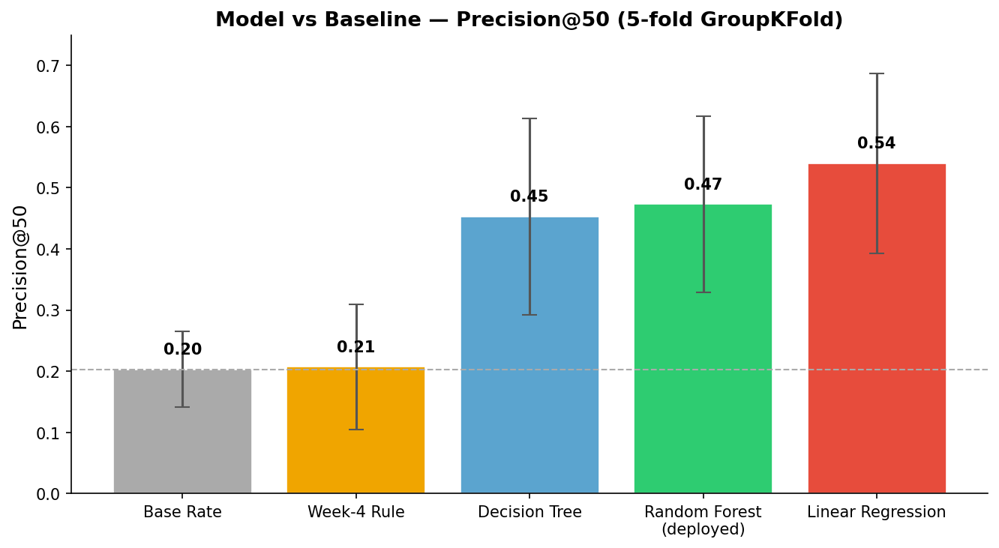

Content editorial teams at FlyRank manage tens of thousands of pages per client, but
can only manually review a fraction each week — this project asks: can we rank which
pages are leaving the most clicks on the table? Using 61,911 (client, content) pairs
from the FlyRank warehouse (March 2026 GSC data), we trained a Random Forest Regressor
on seven clean content and position features to predict expected CTR, then ranked pages
by estimated missed clicks (lost_clicks = predicted − actual CTR × impressions). The
model more than doubles the hit rate of the existing hand-written rule in a rigorous
5-fold GroupKFold evaluation (Precision@50: 47% vs 21%), but is explicitly limited to
existing clients with at least one prior month of history — and the key methodological
finding (a simpler model's apparent superiority was an artifact of how the evaluation
label was constructed) is reported as an open finding, not a reason to switch models.
Unit of analysis: one (client, content) pair's aggregated GSC performance for a given month.
Decision this supports: which content pages an editor reviews and refreshes first, given they can only handle a limited number per week out of tens of thousands of eligible pages.
Output: a ranked queue (score = estimated missed clicks), not a binary flag.
Action a human takes: an editor opens the top-ranked pages and rewrites the title/ meta description (a "snippet fix").
Cost of a wrong call: flagging a page that isn't really underperforming wastes an editor's limited time; missing a genuinely declining page lets it keep losing traffic unnoticed.
Why ML helps: a fixed rule (Week-4 baseline: impressions>1000, position≤10, CTR<1%) only catches pages that violate one hard threshold and treats them all equally. Position, content age, word count, and SEO metadata interact in ways a single if-statement can't rank — confirmed empirically in Section 5.
Source: FlyRank internship-warehouse (Hugging Face), fact_content_daily_performance
(month=2026-03) joined with dim_content on content_hash_id.
Slice used: 61,911 (client, content) pairs with ≥500 impressions in March 2026, across 36 unique clients.
Deliberately excluded:
- All three features derived from fact_content_query_90d (avg_keyword_length,
total_ranking_keywords, rare_traffic_percent) — this table's window is
2026-04-02 to 2026-06-30, entirely after the March label window (see Section 5,
leakage audit).
- Any GA4 post-click column (sessions, engagement, scroll events) — not knowable at
the moment a search result is shown, so not legal features for predicting CTR.
- provider_used / model_used (who/what wrote the content) — explicitly flagged as
"not a model feature" in the data dictionary.
- Product-decision flags — none used as features (baseline-only, per house rule).
Confirmed: all IDs (client_hash_id, content_hash_id) are pseudonymous hashes
used only for joining/grouping, never as features. No raw client names, URLs, or
queries appear anywhere in work/.
Rule (Week-4): a page is worth reviewing if impressions > 1000 AND avg_position
≤ 10 AND CTR < 1% — high visibility, good ranking, but failing to convert into clicks.
Why it's a fair comparison: built from the same pre-decision signals (position, impressions, CTR) as the model, evaluated on the identical GroupKFold-held-out rows, same K, same "truly underperforming" ground truth.
Baseline numbers (Precision@30, 5-fold GroupKFold): mean = 0.207 (std 0.102), compared to a base rate of 0.203 (std 0.062) — i.e., the hand-written rule barely beats random guessing on this slice.
Method: Random Forest Regressor (100 trees, max_depth=7). Chosen because CTR-vs- position is strongly non-linear (steep drop-off positions 1→3, flat after ~10), and because it was verified empirically against simpler alternatives on the same split (Section 5).
Final feature list (7, no leakage): avg_pos, word_count, search_volume,
competition, cpc, backlinks, content_age_days.
Deliberately left out: the three fact_content_query_90d features (temporal leak,
Section 5); all GA4 engagement columns (post-click, not available at decision time);
provider_used/model_used (non-content signal).
Target: actual_ctr = total_clicks / total_imp, an observed outcome (not a
hand-defined proxy).
Split design: three splits, each answering a different honesty question —
random (optimistic baseline), GroupShuffleSplit/GroupKFold by client_hash_id
(does it work on a client never seen in training?), and time-based (train Feb, test
March, same clients — the realistic deployment scenario).
Leakage audit: an initial feature set included three columns from
fact_content_query_90d. That table's window (Apr 2–Jun 30, 2026) sits entirely after
the March label window — a temporal leak. Removing it dropped random-split R² from
0.2393 to 0.1378 (confirms the leak inflated the score) and explained why
rare_traffic_percent had dominated feature importance (33%+) in every earlier run.
R² results, final clean feature set:
| Split | R² |
|---|---|
| Random (single seed) | 0.1378 |
| Random, 5-seed mean | 0.1375 (std 0.011) — stable |
| Grouped, single seed | -0.1966 |
| Grouped, 5-seed mean | -0.1938 (std 0.167) — unstable |
| Grouped, 5-fold GroupKFold (full coverage, most reliable) | -0.0444 (std 0.109) |
| Time-based (Feb→Mar, existing clients) | 0.0830 |
Interpretation: the model generalizes reasonably to existing clients (time-based R²≈0.08) but not to brand-new ones (grouped R²≈-0.04 to -0.20, unstable and often negative) — a cold-start limitation, not overfitting or a bug (feature importance rankings stay nearly identical across splits, ruling out simple memorization).
Precision@50 (5-fold GroupKFold, the metric that matches the actual decision):
| mean | std | |
|---|---|---|
| Random Forest (deployed) | 0.473 | 0.144 |
| Linear Regression | 0.540 | 0.147 |
| Decision Tree | 0.453 | 0.161 |
| Week-4 Rule | 0.207 | 0.102 |
| Base rate | 0.203 | 0.062 |

Figure 1: Precision@50 (mean ± std, 5-fold GroupKFold). Random Forest more than doubles the Week-4 rule.Random Forest more than doubles the baseline rule's precision (0.473 vs 0.207, ~2.3x) and clears the base rate by a similar margin.
A methodological caveat worth stating plainly: Linear Regression scored higher
on Precision@50 despite the worst R² (0.057). Its coefficients show why: avg_pos
dominates (magnitude ~2.3x the next feature; word_count/search_volume/backlinks
contribute almost nothing) — and the "truly underperforming" ground truth used for
Precision@K is itself defined relative to position buckets. Linear Regression's higher
score likely reflects alignment with how the evaluation label was constructed, not
superior real-world ranking. Random Forest was kept as the deployed model so the full
feature set (not just position) drives the final queue — this divergence is reported
as an open finding, not acted on as a reason to switch models.
Error read: the model is only reliably useful for clients with ≥1 prior month of history; for new clients its errors are large and directionally unpredictable (sometimes over-, sometimes under-estimating CTR with no consistent pattern across GroupKFold folds).
What the model leans on (feature importance, clean set): avg_pos, content_age_days,
and word_count carry almost all the signal; search_volume, competition, cpc,
backlinks contribute marginally. This is a directional, decision-support finding:
content age is nearly as predictive as position, suggesting real content-decay effects
independent of ranking — worth a dedicated follow-up analysis.
Surprise / negative result: adding categorical content-type/intent features (an earlier iteration) added no measurable R² over the 5-feature model (0.1333 vs 0.1334) — a well-understood "no effect," not a failed experiment.
The model outputs a ranked queue by lost_clicks = (predicted_ctr − actual_ctr) ×
impressions. 39,652 of 61,911 pages (64%) were flagged. Every page carries one reason
code (CTR_BELOW_MODEL_EXPECTATION) and one action (SNIPPET_FIX) — an editor reviews
the top of the queue and rewrites title/meta description first.
Confidence and limits, stated explicitly: - Valid only for clients with ≥1 prior month of GSC history (time-based R²≈0.08). - Never valid for brand-new clients (grouped R² negative and unstable). - This is decision-support only: it flags a mathematical gap, not a diagnosed cause (a page may show low CTR because of a zero-click SERP feature, not a bad title) — a human must check search intent and competitor-brand keywords before acting. - Extreme outliers (CTR far below even the client's own median) should get manual review first — verified as real data, not errors, but likely to have a specific cause rather than a generic fix.
Re-run from a fresh clone:
git clone https://github.com/Mahmoud-Beram/flyrank-ml-internship.git
cd flyrank-ml-internship
pip install -r requirements.txt
# open work/notebooks/capstone.ipynb in Colab, or run w01–w07 in order,
# then work/notebooks/capstone.ipynb, Runtime → Run all
Seeds: random_state=42 for the main pipeline; stability re-checked across seeds
[0, 1, 42, 100, 2024] (Section 5).
Environment: duckdb, pandas, scikit-learn (see requirements.txt); a Hugging
Face HF_TOKEN read secret is required to query hf://datasets/FlyRank/internship-warehouse.
Note on exact numbers: re-running end-to-end may shift results by a few hundredths
of R² (DuckDB's read_parquet doesn't guarantee row order without an ORDER BY,
which shifts which rows land in train vs test). The stable claims are the directions
and relative comparisons (leak inflates scores; grouped collapses; RF beats the
baseline rule by ~2x) — not any single number to the third decimal.
Built on the FlyRank ML Internship dataset — anonymized, aggregated Google Search Console and content-property data provided by FlyRank for educational research. Crediting the data source is standard research practice; this project would not exist without that real warehouse.